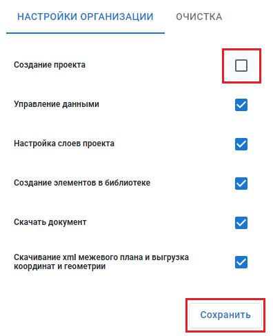

Управление организацией
Настройки организации и очистка
Вкладка «Настройка организации» предназначена для ограничения одновременно всех пользователей и групп пользователей. Снятое выделение определённой функции заблокирует возможно использовать её у всех, кроме создателя организации. Чтобы изменения вступили в силу используйте кнопку «Сохранить»

Вкладка «Очистка» содержит в себе функцию «Очистить дефолтные слои». Данная функция очищает ненужные файлы на «Geoserver», которые создаются при неудачном импорте «.shp» файлов.